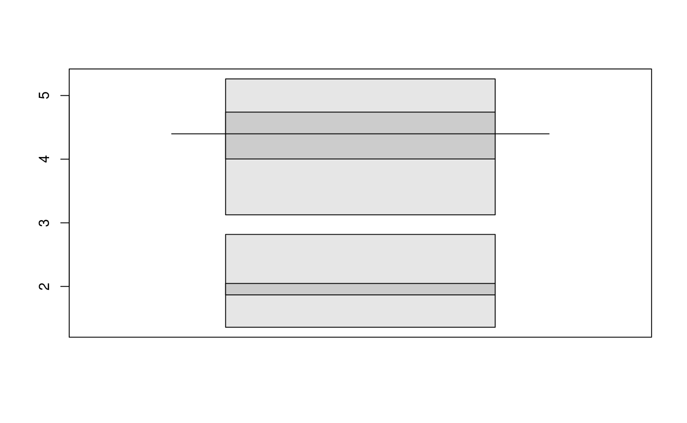
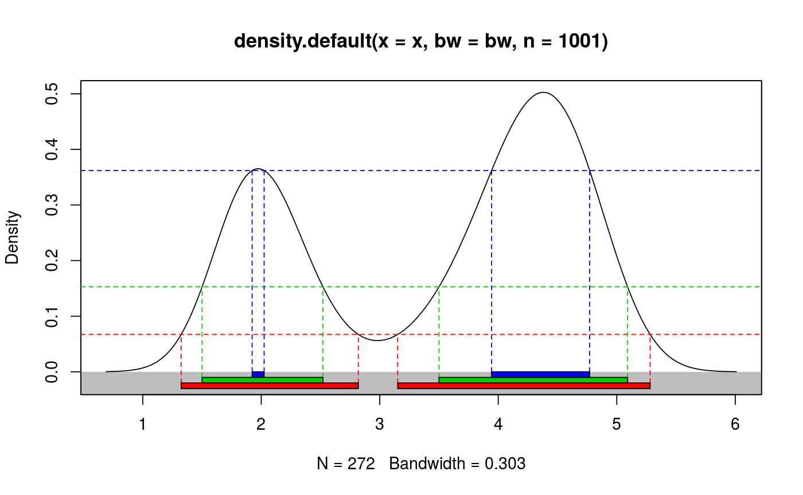
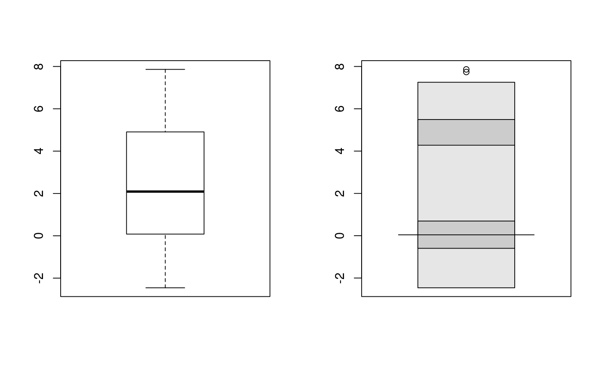
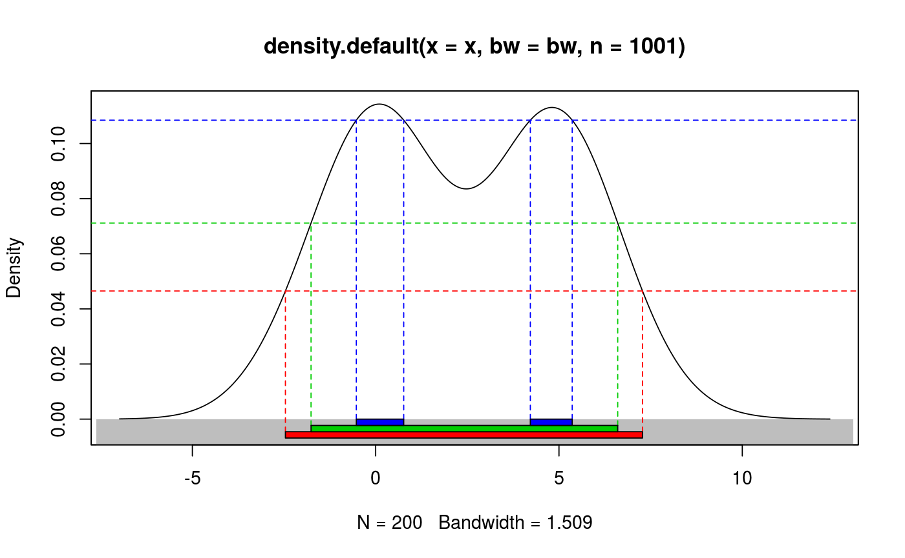
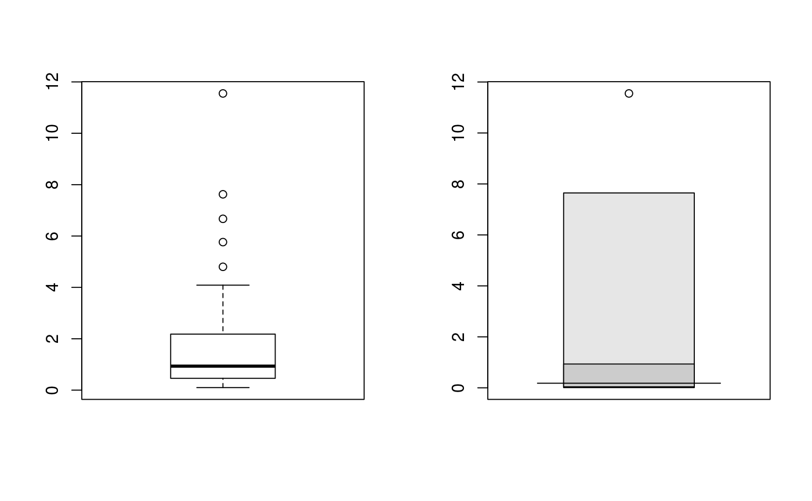

Calculates and plots highest density regions in one dimension including the HDR boxplot.
hdr(x = NULL, prob = c(50, 95, 99), den = NULL, h = hdrbw(BoxCox(x, lambda), mean(prob)), lambda = 1, nn = 5000, all.modes = FALSE) hdr.den(x, prob = c(50, 95, 99), den, h = hdrbw(BoxCox(x, lambda), mean(prob)), lambda = 1, xlab = NULL, ylab = "Density", ylim = NULL, plot.lines = TRUE, col = 2:8, ...) hdr.boxplot(x, prob = c(99, 50), h = hdrbw(BoxCox(x, lambda), mean(prob)), lambda = 1, boxlabels = "", col = gray((9:1)/10), main = "", xlab = "", ylab = "", pch = 1, ...)
| x | Numeric vector containing data. In |
|---|---|
| prob | Probability coverage required for HDRs |
| den | Density of data as list with components |
| h | Optional bandwidth for calculation of density. |
| lambda | Box-Cox transformation parameter where |
| nn | Number of random numbers used in computing f-alpha quantiles. |
| all.modes | Return all local modes or just the global mode? |
| xlab | Label for x-axis. |
| ylab | Label for y-axis. |
| ylim | Limits for y-axis. |
| plot.lines | If |
| col | Colours for regions of each box. |
| … | Other arguments passed to plot. |
| boxlabels | Label for each box plotted. |
| main | Overall title for the plot. |
| pch | Plotting character. |
hdr.boxplot retuns nothing. hdr and hdr.den
return a list of three components:
The endpoints of each interval in each HDR
The estimated mode of the density.
The value of the density at the boundaries of each HDR.
Either x or den must be provided. When x is provided,
the density is estimated using kernel density estimation. A Box-Cox
transformation is used if lambda!=1, as described in Wand, Marron and
Ruppert (1991). This allows the density estimate to be non-zero only on the
positive real line. The default kernel bandwidth h is selected using
the algorithm of Samworth and Wand (2010).
Hyndman's (1996) density quantile algorithm is used for calculation.
hdr.den plots the density with the HDRs superimposed.
hdr.boxplot displays a boxplot based on HDRs.
Hyndman, R.J. (1996) Computing and graphing highest density regions. American Statistician, 50, 120-126.
Samworth, R.J. and Wand, M.P. (2010). Asymptotics and optimal bandwidth selection for highest density region estimation. The Annals of Statistics, 38, 1767-1792.
Wand, M.P., Marron, J S., Ruppert, D. (1991) Transformations in density estimation. Journal of the American Statistical Association, 86, 343-353.
# Old faithful eruption duration times hdr(faithful$eruptions)#> $hdr #> [,1] [,2] [,3] [,4] #> 99% 1.323922 2.819339 3.152030 5.281990 #> 95% 1.500710 2.520789 3.500000 5.091577 #> 50% 1.923458 2.024619 3.942421 4.772085 #> #> $mode #> [1] 4.377615 #> #> $falpha #> 1% 5% 50% #> 0.06748624 0.15301144 0.36117284 #>hdr.boxplot(faithful$eruptions)hdr.den(faithful$eruptions)#> $hdr #> [,1] [,2] [,3] [,4] #> 99% 1.324308 2.819325 3.151474 5.281758 #> 95% 1.500841 2.520650 3.500000 5.091343 #> 50% 1.923230 2.024310 3.943777 4.771247 #> #> $mode #> [1] 4.38173 #> #> $falpha #> 1% 5% 50% #> 0.06719217 0.15281007 0.36195375 #># Simple bimodal example x <- c(rnorm(100,0,1), rnorm(100,5,1)) par(mfrow=c(1,2)) boxplot(x) hdr.boxplot(x)par(mfrow=c(1,1)) hdr.den(x)#> $hdr #> [,1] [,2] [,3] [,4] #> 99% -2.4620857 7.2784723 NA NA #> 95% -1.7628534 6.6026853 NA NA #> 50% -0.5282631 0.7653226 4.21876 5.360576 #> #> $mode #> [1] 0.1060604 #> #> $falpha #> 1% 5% 50% #> 0.04649925 0.07114561 0.10847419 #># Highly skewed example x <- exp(rnorm(100,0,1)) par(mfrow=c(1,2)) boxplot(x) hdr.boxplot(x,lambda=0)